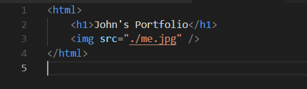
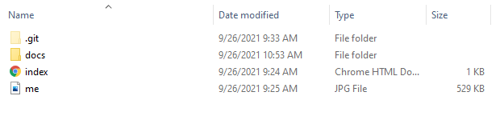
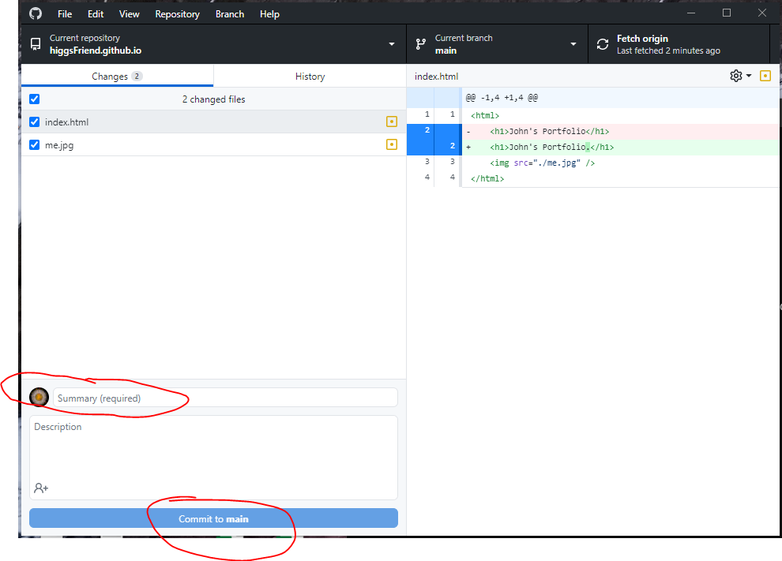
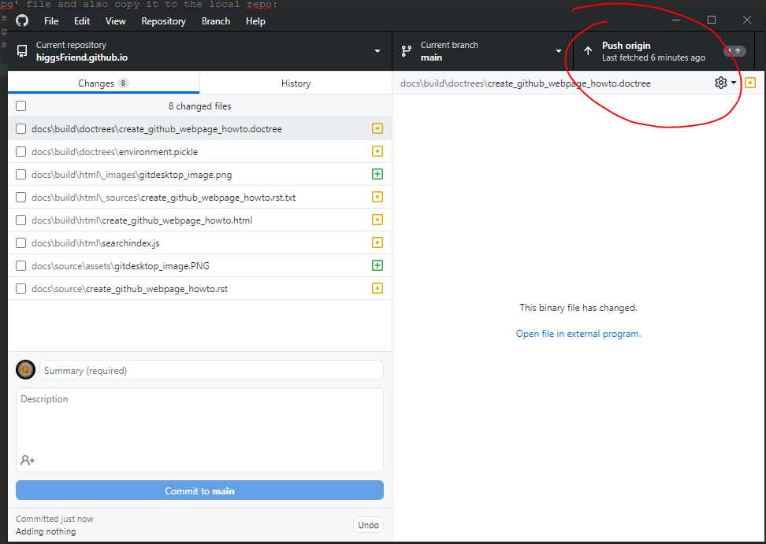

How to create a webpage in GitHub¶
Create a GitHub account if you don’t already have one.
Login to your GitHub account.
Select ‘New’ to create a new Repo.
Create a local copy of your repo by copying the URL and using GitDesktop.
- Create an index.html file similar to the following in your new (local) repo:
- 
- Create the ‘me.jpg’ file and also copy it to the local repo:
- 
- Commit your changes to the repo via GitDesktop. You will need to add comments and click commit (see circled items):
- 
- Now push them to the repo:
- 